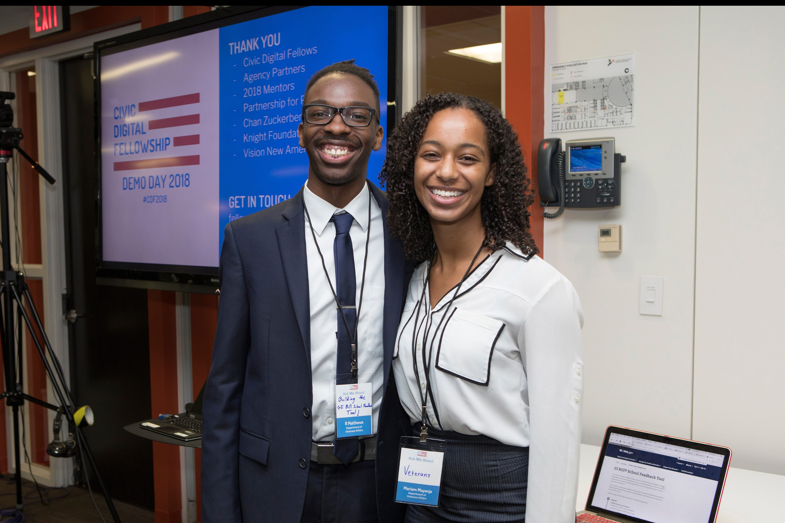

GI Bill® School Feedback Tool
Digital Services at Veteran Affairs
Civic Digital Fellowship
This summer, the Department of Veterans Affairs (VA) and the Digital Service team at VA (DSVA) partnered with Coding it Forward and their Civic Digital Fellowship program to launch the GI Bill School Feedback Tool. Founded in January 2017, Coding it Forward is a student-led 501(c)(3) nonprofit empowering computer science, data science, and design students to use their tech skills for good. Removing the barriers and lack of formal, technical government internship opportunities for young technologists, the Civic Digital Fellowship provides an opportunity for student fellows to work on meaningful projects across government for 10 weeks.
For the Digital Service Team at the VA, Mariam Mayanja and I were the two fellows who researched, designed, and coded a new tool that helps Veterans submit feedback about the school where they used their GI Bill benefits.
My job was to help design and take on the role of frontend developer of the tool. The tool will be live on Vets.gov soon, but until then, below are a few gifs of my work on the redesigned tool:
Resources
Collaborators:
Mariam Mayanja

Github Repository
Slide Deck